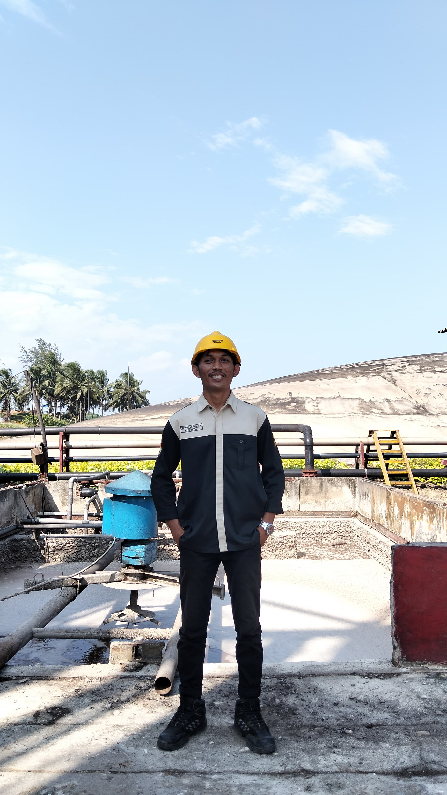

Nama : Muhamad Adi Saputra
NPM : E1G021096
Program Studi :Teknologi Industri Pertanian
Universitas :Universitas Bengkulu
Email :saputramuhamadadi53@gmail.com
Asal : Karang jaya, Teras Terunjam, Mukomuko
Hobi : main game
Foto :
| Hari | Jam | Mata Kuliah | Dosen | Ruangan |
|---|---|---|---|---|
| Senin | 08.00 - 09.40 | Komputer & Pemograman | Arina Fatharani, S.T.P., M.Sc. | Diklat 3 R.20 | Fitri Yuwita S, S.TP., M.P. |
| 10.00 - 11.40 | Rekayasa Proses | Drs.Bosman Sidebang, M.P | Diklat 3 R.20 | Wica Elvina, M.Si |
| 14.00 - 15.40 | Karya Tulis Ilmiah | Prof. Dr. Ir. Yuwana, M.Sc. | GB 1 R.4 | |
| Selasa | 14.00 - 15.40 | Statistik Dasar | Ir. Laili Susanti, M.Sc | Diklat 3 R.21 | Ir. Lukman Hidayat, M.P. |
| Rabu | 10.00 - 11.40 | Bahasa Inggris Akademik | Ir. Wuri Marsigit, M.AppSc. | Diklat 3 R.20 | Arina Fatharani, S.T.P., M.Sc. |
| 12.00 - 13.40 | Proyek Perencanaan Industri | Ir. Hidayat Koto, M.Sc. | GB 1 R.15 | |
| 14.00 - 15.40 | Analisis Pengambilan Keputusan | Ir. Hidayat Koto, M.Sc. | GB 1 R.4 | Ika Gusriani, S.TP., M.P |
| Kamis | (Ketentuan Dosen) | Studi Lapangan Industri | Wica Elvina, M.Si | GB 1 R.4 | Firmansyah, S.T., M.Sc |
| Jumat | 08.00 - 09.40 | Teknologi Hasil Perkebunan | Dr. Yazid Ismi Intara., S.P., M.Si | GB 1 R.9 | Sri Wulandari., S.T.P., M.Sc |